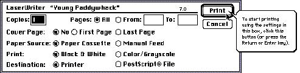
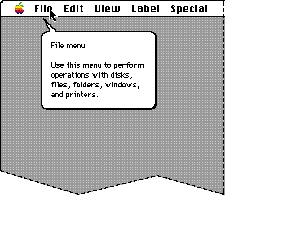
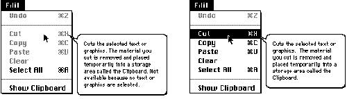
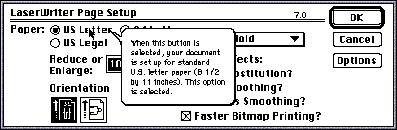
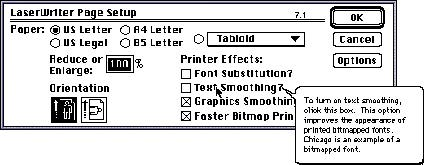
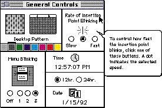
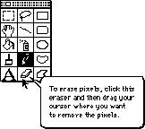
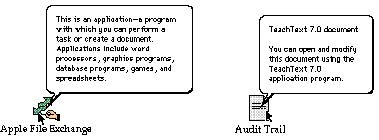
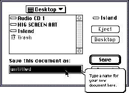

|
|
Wording for Specific Balloon TypesUse similar wording in similar balloons to make it easier for the user to read the balloon messages. Unnecessary variations in wording are distracting. Using phrasing similar to that described here will help your users quickly assimilate the information since the structure of the information will be familiar.Buttons With WordsFor buttons that appear in dialog boxes, use the construction"To [perform action], click this button." Figure 11-9 shows an example of a help balloon for a button. Figure 11-9 Help balloon for a button  Menu TitlesFor pull-down menu titles, give the title of the menu and then describe what kinds of commands are in the menu. You provide the title of the menu because some menus on the menu bar are icons, not words. Figure 11-10 shows an example of this type of help balloon.Figure 11-10 Help balloon for a menu title  For pop-up menus, describe what to do with the menu. Don't give the menu a name. For example, you could say, "Use this pop-up menu to describe items you want to find." Menu ItemsDon't name the individual items in a menu. Begin with a verb describing what happens when you choose the item. Figure 11-11 shows an example of a help balloon for a common menu item and an example of how to write a help balloon for the same menu item when it's unavailable (dimmed).Figure 11-11 Help balloon for a menu item  For menu items that require more information and display a dialog box, it's not necessary to say that a dialog box appears. The user wants to know what choosing the menu item ultimately accomplishes. Radio ButtonsIt's best to provide separate balloons for selected, unselected, and unavailable radio buttons. For selected radio buttons, describe what the button does, beginning with a verb. At the end of the balloon, say that the button is selected. Figure 11-12 shows an example of this.Figure 11-12 Help balloon for a selected radio button  For an unselected radio button, describe what happens when you select the button. For example, you could say, "To align the objects at the left margin of the document, click this button." For a button that's not available, describe what the button does when selected using a sentence fragment beginning with a verb. Then explain why it is not available. For example, a balloon might say, "Aligns objects at the left margin of the document. Not available because no objects are selected." CheckboxesFor checkboxes, you need to provide several pieces of information. Describe the current state of the system (what the system does currently, given whether the option is selected or not), an explanation of the option provided by the checkbox, and how to turn it on or off. Don't describe the current state of the system if it's obvious or if it would involve saying merely, "This option is not on." Also, don't include an explanation of the option if your users don't need one.Figure 11-13 shows an example of a help balloon for a checkbox. Figure 11-13 Help balloon for a checkbox  Note that the help balloon shown in Figure 11-13 tells the user about the current state of the system by the way it phrases the sentence: "To turn on text smoothing, click this box." (This means that text smoothing is not currently being used.) If the sentence were phrased like this: "To turn off text smoothing, click this box," it would tell us the opposite information about the current state of the system (that text smoothing is currently being used). For unavailable checkboxes, describe what the box does when it's selected and then explain why it is not available. This case is similar to that of an unavailable radio button. Groups of Checkboxes or Radio ButtonsYou can provide a single balloon for an entire group of radio buttons, or for a group of closely related checkboxes. When providing one balloon for a group of options, describe what you can do with the options, how to implement the options, and how you can tell whether an option is selected.Figure 11-14 Help balloon for a group of radio buttons  Tools in PalettesIt's a good idea to name tools in palettes, because the name can help the user figure out what the tool is for. After naming the tool, describe one or two likely ways to use it. Don't describe every shortcut or trick you can do with the modifier keys. Figure 11-15 shows one example of a help balloon for a tool in a palette.Figure 11-15 Help balloon for a tool palette  Window PartsApple provides standard balloons for standard window parts. If your windows have nonstandard parts, use the general guidelines for writing balloons to describe them. Name only the parts of the window that it's necessary for the user to know.Modal Dialog Box on the ScreenWhen there is a dialog box on the screen, you can add the following wording to the end of each balloon that refers to an unavailable item:"Not available because a modal dialog box is on the screen." IconsApple provides standard balloons for icons. If you wish, you can provide your own balloons for your application and its associated special files, but don't provide balloons for your application's document icons.You don't need to describe how to open icons; you can assume that Macintosh users know how. Figure 11-16 shows the standard help balloons for an application icon and a document icon. Figure 11-16 Help balloons for an application icon and a document icon  Text Entry BoxesWhen you describe text entry boxes in dialog boxes, use here to describe the area. You don't have to name the area, or describe standard Macintosh editing procedures. Figure 11-17 shows an example of a help balloon for a text entry box.Figure 11-17 Help balloon for a text entry box  |